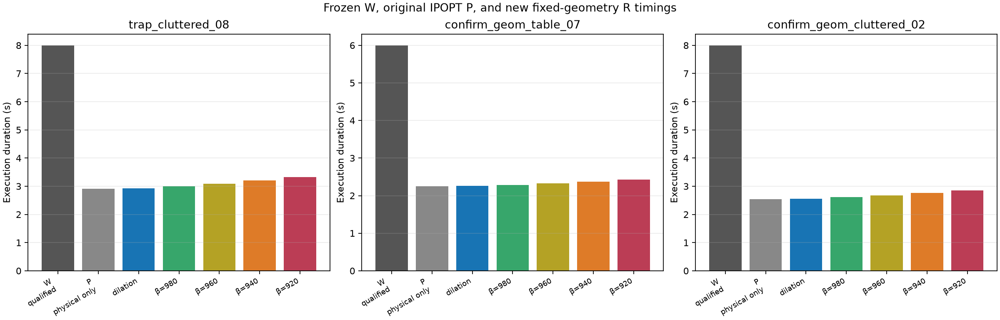
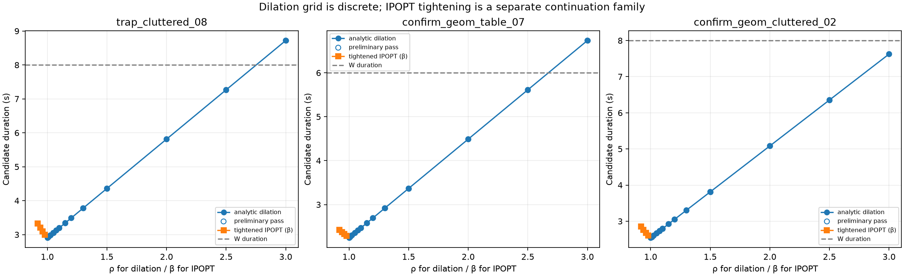
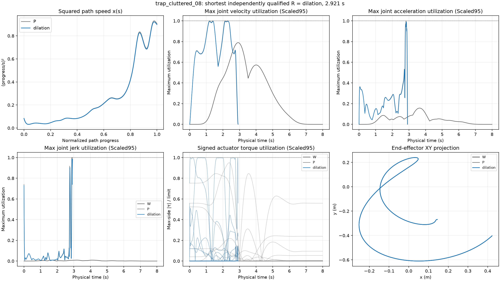
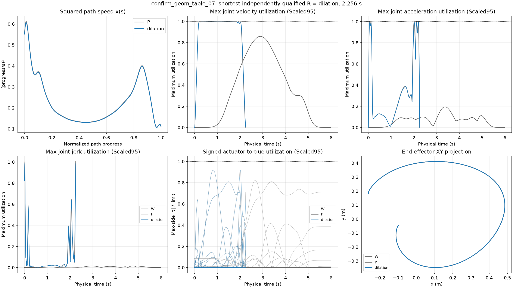
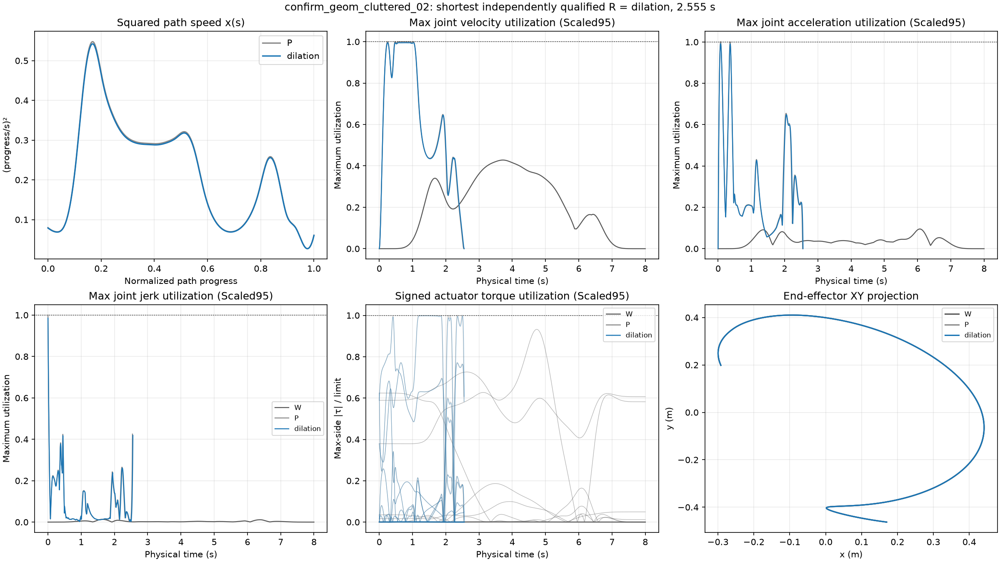

GO_MARGIN_RECOVERY: 15 of 15 new candidates passed independent physical and Scaled95 sampled qualification. 15 also exceeded the registered 10% duration reduction from W. The paths remain fixed to the original W/P quintic geometry.
W is a qualified strict-contract reference. P is a faster IPOPT reference that failed Scaled95 and is not a qualified strict-contract optimum. Dense/adaptive checks are sampled validation, not continuous-time torque or collision certification. IPOPT results are local solutions, not global time optima.
Three selected synthetic-torque tasks; all 15 registered method cells are present. No population-level confidence intervals are claimed.

| Task | Method | W s | P s | R s | Reduction vs W % | IPOPT converged | Iterations | IPOPT solve s | Dilation screen s | Dilation total CPU s | Physical | Scaled95 | Scaled95 limiting family | Joint index | World clearance m | Self clearance m |
|---|---|---|---|---|---|---|---|---|---|---|---|---|---|---|---|---|
| trap_cluttered_08 | dilation | 8.0 | 2.906695768572586 | 2.9212292474154573 | 63.484634407306785 | None | None | None | 0.018531673995312303 | 0.319969484989997 | True | True | torque | 3 | 0.05499999999999999 | 0.08185083041570632 |
| trap_cluttered_08 | tight_b980 | 8.0 | 2.906695768572586 | 2.99403533298658 | 62.57455833766775 | True | 28 | 11.811323066009209 | None | None | True | True | jerk | 2 | 0.05499999999999999 | 0.08185083041570632 |
| trap_cluttered_08 | tight_b960 | 8.0 | 2.906695768572586 | 3.0912820885950407 | 61.358973892562 | True | 24 | 9.924100895994343 | None | None | True | True | position | 3 | 0.05499999999999999 | 0.08185083041570632 |
| trap_cluttered_08 | tight_b940 | 8.0 | 2.906695768572586 | 3.20106280524546 | 59.98671493443175 | True | 25 | 13.00152412301395 | None | None | True | True | position | 3 | 0.05499999999999999 | 0.08185083041570632 |
| trap_cluttered_08 | tight_b920 | 8.0 | 2.906695768572586 | 3.3270955829301125 | 58.41130521337359 | True | 47 | 20.633327257994097 | None | None | True | True | position | 3 | 0.05499999999999999 | 0.08185083041570632 |
| confirm_geom_table_07 | dilation | 6.0 | 2.244931171400508 | 2.2561558272575084 | 62.39740287904152 | None | None | None | 0.018672349979169667 | 0.3207595379790291 | True | True | velocity | 2 | 0.039259225227046654 | 0.08200573610499923 |
| confirm_geom_table_07 | tight_b980 | 6.0 | 2.244931171400508 | 2.2861347024759042 | 61.89775495873493 | True | 40 | 17.32830853399355 | None | None | True | True | jerk | 2 | 0.039259225227046654 | 0.08200573610499923 |
| confirm_geom_table_07 | tight_b960 | 6.0 | 2.244931171400508 | 2.3299625511092694 | 61.16729081484551 | True | 44 | 18.316124350007158 | None | None | True | True | jerk | 2 | 0.039259225227046654 | 0.08200573610499923 |
| confirm_geom_table_07 | tight_b940 | 6.0 | 2.244931171400508 | 2.3757837135131714 | 60.40360477478048 | True | 44 | 17.300794556038454 | None | None | True | True | jerk | 2 | 0.039259225227046654 | 0.08200573610499923 |
| confirm_geom_table_07 | tight_b920 | 6.0 | 2.244931171400508 | 2.423726257711548 | 59.6045623714742 | True | 43 | 16.916781312960666 | None | None | True | True | jerk | 2 | 0.039259225227046654 | 0.08200573610499923 |
| confirm_geom_cluttered_02 | dilation | 8.0 | 2.5418561852688977 | 2.5545654661952466 | 68.06793167255942 | None | None | None | 0.018792696995660663 | 0.3256880869739689 | True | True | torque | 1 | 0.05499999999999999 | 0.08368209500872967 |
| confirm_geom_cluttered_02 | tight_b980 | 8.0 | 2.5418561852688977 | 2.6081125773610525 | 67.39859278298684 | True | 28 | 11.935466876020655 | None | None | True | True | acceleration | 2 | 0.05499999999999999 | 0.08368209500872967 |
| confirm_geom_cluttered_02 | tight_b960 | 8.0 | 2.5418561852688977 | 2.6812472293617793 | 66.48440963297776 | True | 26 | 10.801586346002296 | None | None | True | True | acceleration | 2 | 0.05499999999999999 | 0.08368209500872967 |
| confirm_geom_cluttered_02 | tight_b940 | 8.0 | 2.5418561852688977 | 2.7632189401077576 | 65.45976324865303 | True | 22 | 8.715358327026479 | None | None | True | True | torque | 1 | 0.05499999999999999 | 0.08368209500872967 |
| confirm_geom_cluttered_02 | tight_b920 | 8.0 | 2.5418561852688977 | 2.8564792316438172 | 64.29400960445228 | True | 25 | 10.207545350014698 | None | None | True | True | acceleration | 2 | 0.05499999999999999 | 0.08368209500872967 |
The dilation arm uses the exact frozen IPOPT squared-speed controls scaled as x/ρ² and scans the registered finite ρ grid. Tightened IPOPT arms keep the geometry fixed and tighten all dynamic envelopes around the registered centers (torque about zero). Plot selection uses saved R trajectories and independent Pinocchio torque audits.


| Method | Family | Physical max utilization | Physical joint / time (s) | Scaled95 max utilization | Scaled95 joint / time (s) |
|---|---|---|---|---|---|
| dilation | position | 0.963474 | 4 / 1.985378 | 0.963474 | 4 / 1.985378 |
| dilation | velocity | 0.945329 | 3 / 1.204121 | 0.995084 | 3 / 1.204121 |
| dilation | acceleration | 0.940663 | 3 / 2.838938 | 0.990171 | 3 / 2.838938 |
| dilation | jerk | 0.935963 | 3 / 2.888725 | 0.985224 | 3 / 2.888725 |
| dilation | torque | 0.948097 | 4 / 0.050819 | 0.997997 | 4 / 0.050819 |
| tight_b980 | position | 0.963474 | 4 / 2.043974 | 0.963474 | 4 / 2.043974 |
| tight_b980 | velocity | 0.931062 | 3 / 1.249010 | 0.980065 | 3 / 1.249010 |
| tight_b980 | acceleration | 0.931099 | 3 / 2.910918 | 0.980104 | 3 / 2.910918 |
| tight_b980 | jerk | 0.931800 | 3 / 2.960167 | 0.980842 | 3 / 2.960167 |
| tight_b980 | torque | 0.931396 | 4 / 0.052799 | 0.980417 | 4 / 0.052799 |
| tight_b960 | position | 0.963474 | 4 / 2.121207 | 0.963474 | 4 / 2.121207 |
| tight_b960 | velocity | 0.912067 | 3 / 1.307526 | 0.960071 | 3 / 1.307526 |
| tight_b960 | acceleration | 0.912098 | 3 / 3.006862 | 0.960103 | 3 / 3.006862 |
| tight_b960 | jerk | 0.914315 | 3 / 3.055981 | 0.962437 | 3 / 3.055981 |
| tight_b960 | torque | 0.912483 | 2 / 3.068645 | 0.960508 | 2 / 3.068645 |
| tight_b940 | position | 0.963474 | 4 / 2.209579 | 0.963474 | 4 / 2.209579 |
| tight_b940 | velocity | 0.893066 | 3 / 1.591069 | 0.940069 | 3 / 1.591069 |
| tight_b940 | acceleration | 0.893090 | 3 / 3.132290 | 0.940095 | 3 / 3.132290 |
| tight_b940 | jerk | 0.893496 | 3 / 3.164219 | 0.940522 | 3 / 3.164219 |
| tight_b940 | torque | 0.893335 | 4 / 0.058248 | 0.940353 | 4 / 0.058248 |
| tight_b920 | position | 0.963474 | 4 / 2.312700 | 0.963474 | 4 / 2.312700 |
| tight_b920 | velocity | 0.874065 | 3 / 1.677626 | 0.920068 | 3 / 1.677626 |
| tight_b920 | acceleration | 0.874114 | 3 / 3.239421 | 0.920120 | 3 / 3.239421 |
| tight_b920 | jerk | 0.873998 | 7 / 3.327096 | 0.919998 | 7 / 3.327096 |
| tight_b920 | torque | 0.874455 | 2 / 3.300903 | 0.920479 | 2 / 3.300903 |

| Method | Family | Physical max utilization | Physical joint / time (s) | Scaled95 max utilization | Scaled95 joint / time (s) |
|---|---|---|---|---|---|
| dilation | position | 0.920053 | 4 / 0.000000 | 0.920053 | 4 / 0.000000 |
| dilation | velocity | 0.945301 | 3 / 0.208391 | 0.995054 | 3 / 0.208391 |
| dilation | acceleration | 0.942265 | 7 / 2.202328 | 0.991858 | 7 / 2.202328 |
| dilation | jerk | 0.940705 | 7 / 2.253954 | 0.990216 | 7 / 2.253954 |
| dilation | torque | 0.873543 | 4 / 2.013136 | 0.919519 | 4 / 2.013136 |
| tight_b980 | position | 0.920053 | 4 / 0.000000 | 0.920053 | 4 / 0.000000 |
| tight_b980 | velocity | 0.931035 | 2 / 1.968964 | 0.980037 | 2 / 1.968964 |
| tight_b980 | acceleration | 0.931897 | 7 / 2.155346 | 0.980944 | 7 / 2.155346 |
| tight_b980 | jerk | 0.933944 | 3 / 0.009013 | 0.983098 | 3 / 0.009013 |
| tight_b980 | torque | 0.871001 | 4 / 2.041479 | 0.916844 | 4 / 2.041479 |
| tight_b960 | position | 0.920053 | 4 / 0.000000 | 0.920053 | 4 / 0.000000 |
| tight_b960 | velocity | 0.912074 | 2 / 2.097433 | 0.960077 | 2 / 2.097433 |
| tight_b960 | acceleration | 0.912224 | 3 / 0.111208 | 0.960236 | 3 / 0.111208 |
| tight_b960 | jerk | 0.915013 | 3 / 0.009091 | 0.963171 | 3 / 0.009091 |
| tight_b960 | torque | 0.865262 | 4 / 2.083500 | 0.910802 | 4 / 2.083500 |
| tight_b940 | position | 0.920053 | 4 / 0.000000 | 0.920053 | 4 / 0.000000 |
| tight_b940 | velocity | 0.893064 | 3 / 0.200087 | 0.940067 | 3 / 0.200087 |
| tight_b940 | acceleration | 0.894001 | 7 / 2.314068 | 0.941054 | 7 / 2.314068 |
| tight_b940 | jerk | 0.896032 | 3 / 0.009164 | 0.943192 | 3 / 0.009164 |
| tight_b940 | torque | 0.858856 | 4 / 2.127104 | 0.904059 | 4 / 2.127104 |
| tight_b920 | position | 0.920053 | 4 / 0.000000 | 0.920053 | 4 / 0.000000 |
| tight_b920 | velocity | 0.874060 | 3 / 0.202754 | 0.920063 | 3 / 0.202754 |
| tight_b920 | acceleration | 0.874778 | 7 / 2.361840 | 0.920819 | 7 / 2.361840 |
| tight_b920 | jerk | 0.877053 | 3 / 0.009242 | 0.923213 | 3 / 0.009242 |
| tight_b920 | torque | 0.854082 | 4 / 2.173732 | 0.899034 | 4 / 2.173732 |

| Method | Family | Physical max utilization | Physical joint / time (s) | Scaled95 max utilization | Scaled95 joint / time (s) |
|---|---|---|---|---|---|
| dilation | position | 0.845548 | 6 / 0.348737 | 0.845548 | 6 / 0.348737 |
| dilation | velocity | 0.945306 | 3 / 0.478387 | 0.995059 | 3 / 0.478387 |
| dilation | acceleration | 0.941949 | 3 / 0.075258 | 0.991525 | 3 / 0.075258 |
| dilation | jerk | 0.935891 | 3 / 0.000000 | 0.985149 | 3 / 0.000000 |
| dilation | torque | 0.948020 | 2 / 1.394825 | 0.997916 | 2 / 1.394825 |
| tight_b980 | position | 0.845548 | 6 / 0.351856 | 0.845548 | 6 / 0.351856 |
| tight_b980 | velocity | 0.931030 | 3 / 0.482713 | 0.980032 | 3 / 0.482713 |
| tight_b980 | acceleration | 0.932376 | 3 / 0.075573 | 0.981449 | 3 / 0.075573 |
| tight_b980 | jerk | 0.931000 | 3 / 0.000000 | 0.980000 | 3 / 0.000000 |
| tight_b980 | torque | 0.932317 | 2 / 2.557537 | 0.981386 | 2 / 2.557537 |
| tight_b960 | position | 0.845548 | 6 / 0.356847 | 0.845548 | 6 / 0.356847 |
| tight_b960 | velocity | 0.912108 | 3 / 0.260121 | 0.960113 | 3 / 0.260121 |
| tight_b960 | acceleration | 0.913361 | 3 / 0.076284 | 0.961432 | 3 / 0.076284 |
| tight_b960 | jerk | 0.911999 | 3 / 0.000000 | 0.959999 | 3 / 0.000000 |
| tight_b960 | torque | 0.913253 | 2 / 2.629345 | 0.961319 | 2 / 2.629345 |
| tight_b940 | position | 0.845548 | 6 / 0.362054 | 0.845548 | 6 / 0.362054 |
| tight_b940 | velocity | 0.893026 | 3 / 1.078533 | 0.940028 | 3 / 1.078533 |
| tight_b940 | acceleration | 0.893065 | 6 / 0.375610 | 0.940069 | 6 / 0.375610 |
| tight_b940 | jerk | 0.892999 | 3 / 0.000000 | 0.939999 | 3 / 0.000000 |
| tight_b940 | torque | 0.894189 | 2 / 2.709880 | 0.941252 | 2 / 2.709880 |
| tight_b920 | position | 0.845548 | 6 / 0.367608 | 0.845548 | 6 / 0.367608 |
| tight_b920 | velocity | 0.874030 | 3 / 1.099739 | 0.920032 | 3 / 1.099739 |
| tight_b920 | acceleration | 0.875230 | 3 / 0.086744 | 0.921294 | 3 / 0.086744 |
| tight_b920 | jerk | 0.873999 | 3 / 0.000000 | 0.919999 | 3 / 0.000000 |
| tight_b920 | torque | 0.875126 | 2 / 2.801576 | 0.921185 | 2 / 2.801576 |
The instrumented and uninstrumented runs are compared by outcome, not latency. 40 actual lanes from 10 finalizer snapshots were captured. Raw numerical arrays are checksum-linked below.
| native attempts | trace status | input valid | seed feasible | solver numeric OK | finite solver controls | finish success | finite integrated times | empty seed intervals |
|---|---|---|---|---|---|---|---|---|
| 5 | FAILED | 40 | 0 | 40 | 40 | 0 | 0 | 40 |
Observed seed-feasibility flag is false with empty common uniform-scale intervals; solver numerical flags and raw timing controls remain finite. The false initialization is followed by finish rejection, infinite uniform duration, and NaN times. The native finish kernel intentionally writes NaN sentinel states on unsuccessful lanes. This narrows the observed failure to the seed-feasibility/initialization gate, but does not prove why the geometric candidates lack an admissible seed scale or rule out graph/buffer effects.
Observed source semantics: seed bounds intersect a scalar squared-speed scale across sampled velocity, acceleration, jerk and torque constraints. An empty interval leaves the lane uninitialized. The finish logic emits infinite duration and NaN sentinel states for unsuccessful lanes. This narrows the observed behavior to the seed-feasibility/initialization gate; it does not establish why every path had an empty interval or prove that a different timing profile on that geometry is impossible.
| Trace | Trace SHA256 | Raw buffers | NPZ SHA256 | Bytes |
|---|---|---|---|---|
| F000_pretimeopt_000_timeopt_phase_trace.json | 9335ff71d10b29f95847e323d26cccd8bd34b097fa7b9b3fc7d86adf78ab00de | /home/pkicki/curobo/research/joint_time_oracle/results/native_timeopt_phase_probe_20261109/j1234_f0300/native_full/confirm_geom_cluttered_02/F000_pretimeopt_000_timeopt_phase_buffers.npz | 220e82f86bd107b3ccb16153198c6c2fff279dae6f468dca7b38e83d9dcabdd8 | 3848 |
| F000_pretimeopt_001_timeopt_phase_trace.json | 114a570a03b0428facbf547d63b12befa29e7b310017c0bf170650e593219359 | /home/pkicki/curobo/research/joint_time_oracle/results/native_timeopt_phase_probe_20261109/j1234_f0300/native_full/confirm_geom_cluttered_02/F000_pretimeopt_001_timeopt_phase_buffers.npz | 220e82f86bd107b3ccb16153198c6c2fff279dae6f468dca7b38e83d9dcabdd8 | 3848 |
| F000_pretimeopt_002_timeopt_phase_trace.json | 2112e308e025d2882b3cbcaace76ec30cd2da0072a7478adb93a0049d20432b5 | /home/pkicki/curobo/research/joint_time_oracle/results/native_timeopt_phase_probe_20261109/j1234_f0300/native_full/confirm_geom_cluttered_02/F000_pretimeopt_002_timeopt_phase_buffers.npz | 83905b53eb43f2af1603ce3b5e058786976f9dd46683cd92bf0fccb968695991 | 3903 |
| F000_pretimeopt_003_timeopt_phase_trace.json | cbbd5d29437a3018c18eac212d268fafa120a7aba674f1460e8d006840fa2179 | /home/pkicki/curobo/research/joint_time_oracle/results/native_timeopt_phase_probe_20261109/j1234_f0300/native_full/confirm_geom_cluttered_02/F000_pretimeopt_003_timeopt_phase_buffers.npz | 74d52dda4c456fb48faf4d343ee70051154dee00cac835f17912a939a35bc8de | 3904 |
| F000_pretimeopt_004_timeopt_phase_trace.json | 76fe1c5cb0b82b5ef5adfce2cc9fcd80f442244152458a269e48e5b3038f70f0 | /home/pkicki/curobo/research/joint_time_oracle/results/native_timeopt_phase_probe_20261109/j1234_f0300/native_full/confirm_geom_cluttered_02/F000_pretimeopt_004_timeopt_phase_buffers.npz | 563b3e542dc3cb73eea8e6f367b7908ee17c97ffd4befa189feb751b7123f800 | 4005 |
| F000_pretimeopt_005_timeopt_phase_trace.json | f5a4f0e88a4b784777d0807f3210a3fbd127dc0b54577bcca08f7a0be62a0934 | /home/pkicki/curobo/research/joint_time_oracle/results/native_timeopt_phase_probe_20261109/j1234_f0300/native_full/confirm_geom_cluttered_02/F000_pretimeopt_005_timeopt_phase_buffers.npz | 05e14e733ab81f5e39b36c5da97bdb8134bc50bbeaf7a5c6fdd589938bba8faf | 4002 |
| F000_pretimeopt_006_timeopt_phase_trace.json | 750f0fc7736fe5a407c7279cb4ffcd52f6d28407c068177f4101186b2c3d7332 | /home/pkicki/curobo/research/joint_time_oracle/results/native_timeopt_phase_probe_20261109/j1234_f0300/native_full/confirm_geom_cluttered_02/F000_pretimeopt_006_timeopt_phase_buffers.npz | e7f2592343360e96f8d38c5083e9c7c2bb1d0163a3b51870dc3319f3d528c094 | 3890 |
| F000_pretimeopt_007_timeopt_phase_trace.json | 99327ad4b3703e400253ed02a7f884e83cd55d78a76f2197e56f5482e5408a6a | /home/pkicki/curobo/research/joint_time_oracle/results/native_timeopt_phase_probe_20261109/j1234_f0300/native_full/confirm_geom_cluttered_02/F000_pretimeopt_007_timeopt_phase_buffers.npz | 3a24d02f6aee7660e835223d616c0a3bb1ba66a45c92efd647099e4de629a890 | 3889 |
| F000_pretimeopt_008_timeopt_phase_trace.json | 3f81514c0ca102bb01f442f2f79005939e1ff7c26283ebe2cc0b2ecd799e1e39 | /home/pkicki/curobo/research/joint_time_oracle/results/native_timeopt_phase_probe_20261109/j1234_f0300/native_full/confirm_geom_cluttered_02/F000_pretimeopt_008_timeopt_phase_buffers.npz | 80a7d36905be36b0b831e20cce4fc30a2901d5a612c85bc2f08418432bf96342 | 3830 |
| F000_pretimeopt_009_timeopt_phase_trace.json | 2dc90b56bbe1430e1696f51f526b9721dbc5a52519363cef6e644df1c9b6f68b | /home/pkicki/curobo/research/joint_time_oracle/results/native_timeopt_phase_probe_20261109/j1234_f0300/native_full/confirm_geom_cluttered_02/F000_pretimeopt_009_timeopt_phase_buffers.npz | 80a7d36905be36b0b831e20cce4fc30a2901d5a612c85bc2f08418432bf96342 | 3830 |
See source_provenance.json, native_phase_summary.json, machine-readable summary, and full SHA256 artifact manifest. Large trajectory NPZs are retained at the exact manifest paths and are not embedded in this HTML.
Source scene identifiers were frozen in task records; this report also records checksums for the exact scene YAML files. The three cases are preselected, so results describe these cases only. Collision and dynamics checks remain sampled. Synthetic derating is not a physical payload experiment. No continuous-time certificate or global optimality claim is made.